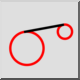
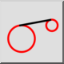
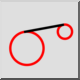
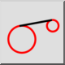

Styczna (dwa okręgi)
Pasek narzędziowy / ikona:
 

Menu: Rysowanie > Linia > Styczna (dwa okręgi)
Skrót: L, T, 2
Polecenia: linetangent2 | tangent2 | lt2
Jest to tłumaczenie automatyczne.
Pasek narzędziowy / ikona:
 

Menu: Rysowanie > Linia > Styczna (dwa okręgi)
Skrót: L, T, 2
Polecenia: linetangent2 | tangent2 | lt2
Za pomocą tego narzędzia można tworzyć styczne między istniejącymi elementami łuku lub okręgu.